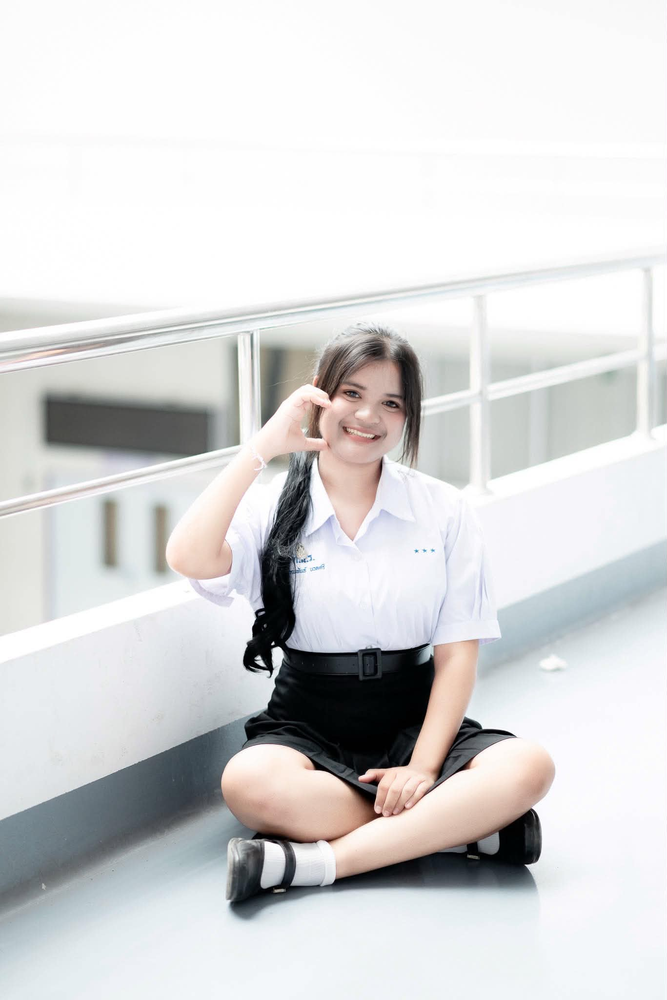
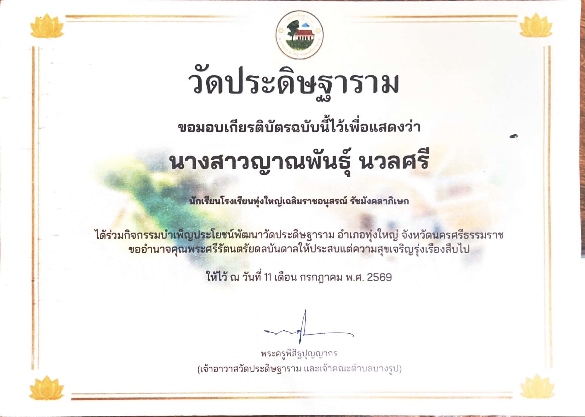
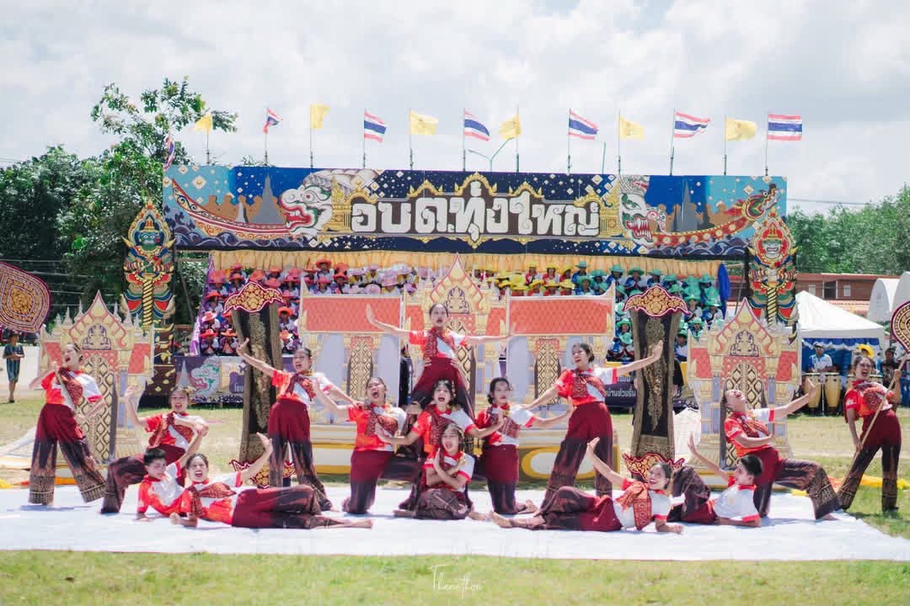
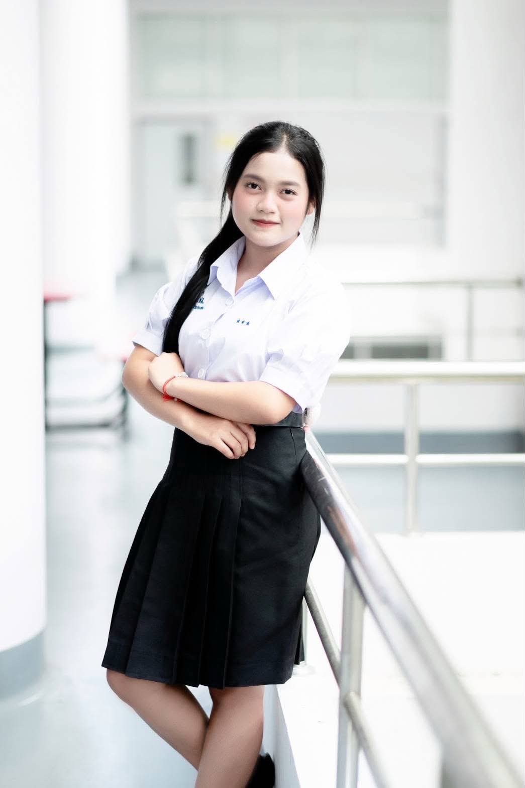
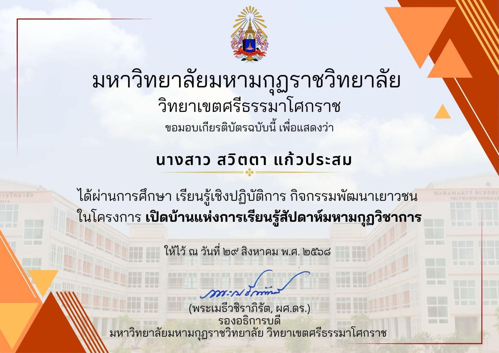
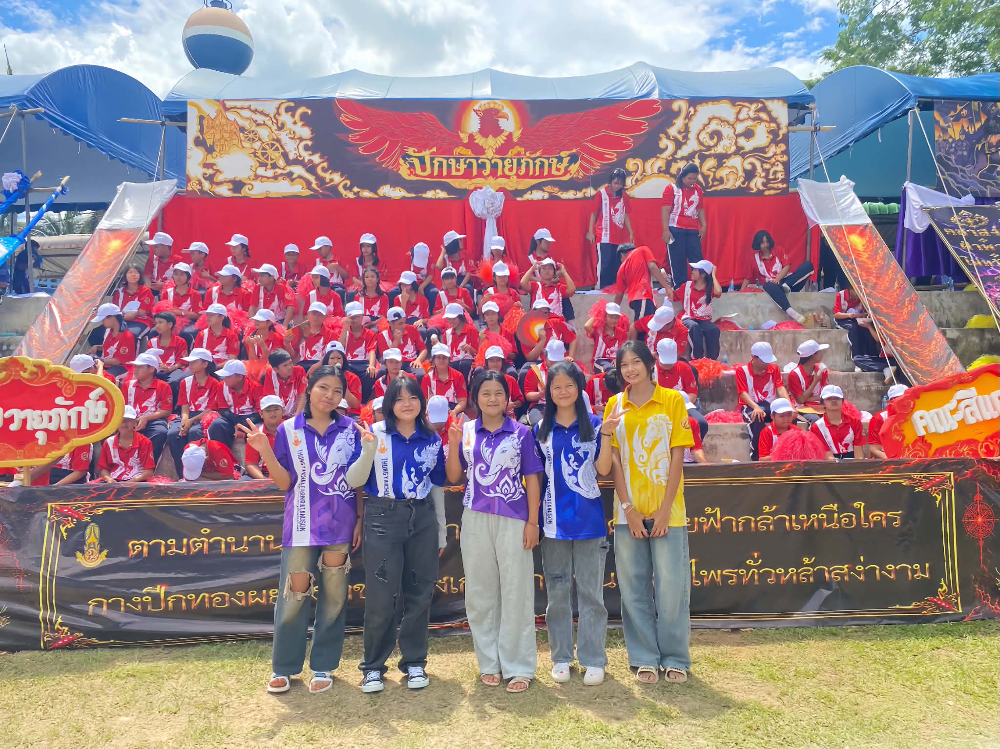

แฟ้มสะสมผลงานแห่งความภาคภูมิใจ
ความพยายามในวันนี้ คือความสำเร็จในวันหน้า
ประวัติส่วนตัวและผลงานของนักเรียน

ชื่อ-นามสกุล : นางสาวญาณพันธ์ นวลศรี
ระดับการศึกษา : ชั้นมัธยมศึกษาปีที่ 6
แผนการเรียน : ศิลป์-คำนวณ
สถานศึกษา : โรงเรียนทุ่งใหญ่เฉลิมราชอนุสรณ์รัชมังคลาภิเษก
มหาวิทยาลัยที่เข้าศึกษาต่อ : มหาวิทยาลัยราชภัฏสุราษฎร์ธานี
คณะ : มนุษยศาสตร์และสังคมศาสตร์
สาขา : ภาษาไทย

ได้รับเกียรติบัตรเข้าร่วมกิจกรรมบำเพ็ญประโยชน์
ณ วัดประดิษฐ์ฐาราม
วันที่ 11 กรกฎาคม พ.ศ. 2569

เข้าร่วมกิจกรรม อบต.ทุ่งใหญ่เกมส์
ณ โรงเรียนทุ่งใหญ่วิทยาคม
ปฏิบัติหน้าที่เป็นสตาฟหลีดเดอร์
โดยถือฉากอยู่ด้านหลังเวที

ชื่อ-นามสกุล : นางสาวสวิตตา แก้วประสม
ระดับการศึกษา : ชั้นมัธยมศึกษาปีที่ 6
แผนการเรียน : ศิลป์-คำนวณ
สถานศึกษา : โรงเรียนทุ่งใหญ่เฉลิมราชอนุสรณ์รัชมังคลาภิเษก
มหาวิทยาลัยที่เข้าศึกษาต่อ : มหาวิทยาลัยราชภัฏสุราษฎร์ธานี
คณะ : วิทยาการจัดการ
สาขา : ธุรกิจอาหาร

ได้รับเกียรติบัตรผ่านการศึกษาเรียนรู้เชิงปฏิบัติการ กิจกรรมพัฒนาเยาวชน

เข้าร่วมกิจกรรมเชียร์ของโรงเรียน
ทุ่งใหญ่เฉลิมราชอนุสรณ์รัชมังคลาภิเษก
ปฏิบัติหน้าที่เป็นสตาฟเชียร์
และสนับสนุนการดำเนินกิจกรรมของโรงเรียน